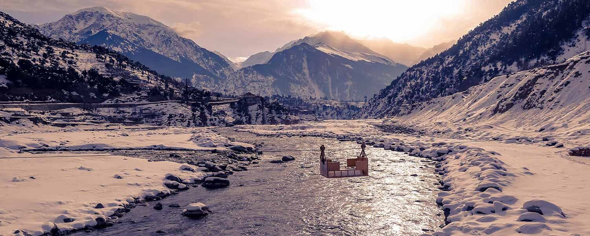

Malam Jabba and Kalam


Places to Visit:
- Malam Jabba Ski Resort: Enjoy skiing and snow sports in winter.
- Mingora: The largest city in Swat, offering various shops and markets.
- Mahodand Lake: A stunning high-altitude lake surrounded by lush meadows.
- Ushu Forest: A pristine forest area with hiking trails and waterfalls.
- Kalam Valley: A picturesque valley known for its natural beauty.
Things to Do:
- Hiking: Explore the beautiful hiking trails in the region.
- River Rafting: Try thrilling river rafting in the Swat River.
- Local Cuisine: Taste traditional Pashtun and Swati dishes.
- Visit Ushu and Utror: Explore these stunning valleys.
Local Tips:
- Best Time to Visit: Summer (May to September) for pleasant weather.
- Local Cuisine: Don't miss out on trying Chapli Kebabs and Mantu.
- Pack Accordingly: Bring warm clothes if visiting in winter.
- Respect Local Culture: Be mindful of local customs and traditions.